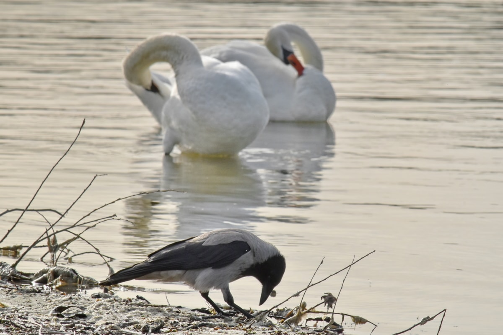
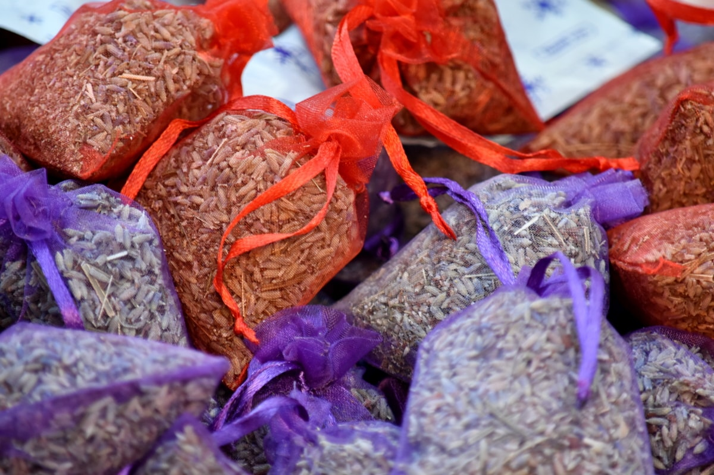
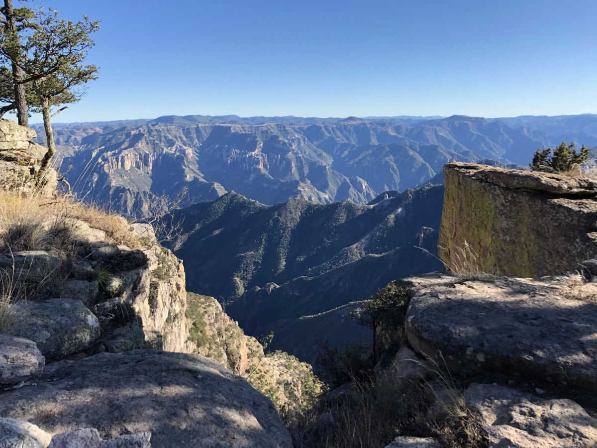
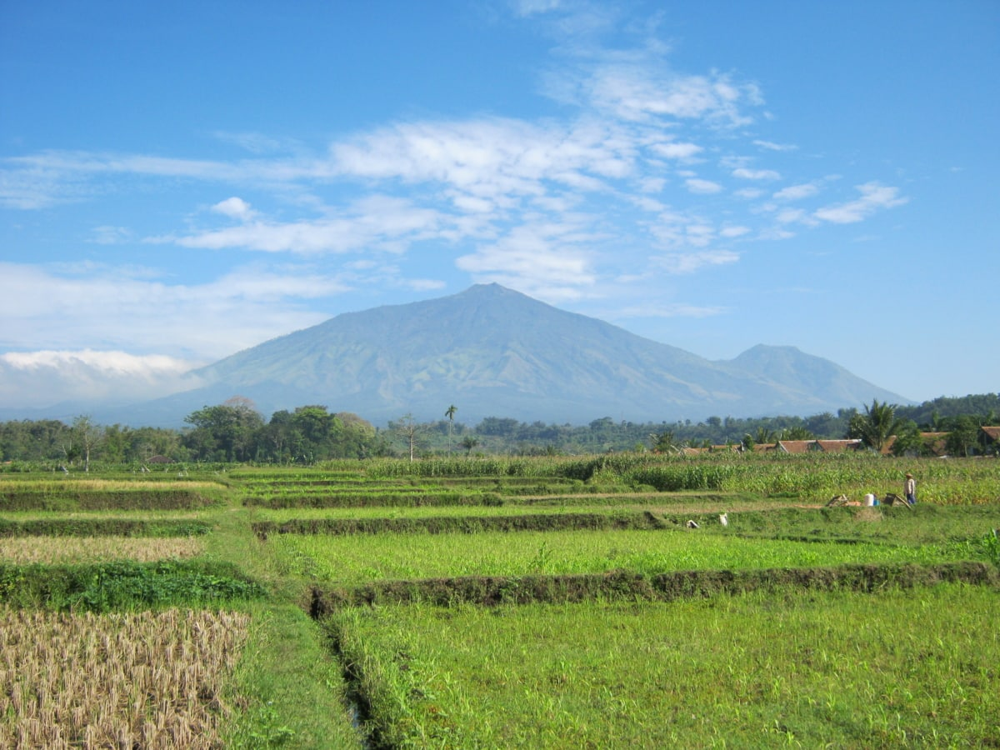

Vintage
Primi igitur omnium statuuntur Epigonus et Eusebius ob nominum gentilitatem oppressi. praediximus enim Montium sub ipso vivendi termino his vocabulis appellatos fabricarum culpasse tribunos ut adminicula futurae molitioni pollicitos.
Primi igitur omnium statuuntur Epigonus et Eusebius ob nominum gentilitatem oppressi. praediximus enim Montium sub ipso vivendi termino his vocabulis appellatos fabricarum culpasse tribunos ut adminicula futurae molitioni pollicitos.


Primi igitur omnium statuuntur Epigonus et Eusebius ob nominum gentilitatem oppressi. praediximus enim Montium sub ipso vivendi termino his vocabulis appellatos fabricarum culpasse tribunos ut adminicula futurae molitioni pollicitos.
Primi igitur omnium statuuntur Epigonus et Eusebius ob nominum gentilitatem oppressi. praediximus enim Montium sub ipso vivendi termino his vocabulis appellatos fabricarum culpasse tribunos ut adminicula futurae molitioni pollicitos.
Primi igitur omnium statuuntur Epigonus et Eusebius ob nominum gentilitatem oppressi. praediximus enim Montium sub ipso vivendi termino his vocabulis appellatos fabricarum culpasse tribunos ut adminicula futurae molitioni pollicitos.
Nec minus feminae quoque calamitatum participes fuere similium. nam ex hoc quoque sexu peremptae sunt originis altae conplures, adulteriorum flagitiis obnoxiae vel stuprorum. inter quas notiores fuere Claritas et Flaviana, quarum altera cum duceretur ad mortem, indumento, quo vestita erat, abrepto, ne velemen quidem secreto membrorum sufficiens retinere permissa est. ideoque carnifex nefas admisisse convictus inmane, vivus exustus est.
Inter quos Paulus eminebat notarius ortus in Hispania, glabro quidam sub vultu latens, odorandi vias periculorum occultas perquam sagax. is in Brittanniam missus ut militares quosdam perduceret ausos conspirasse Magnentio, cum reniti non possent, iussa licentius supergressus fluminis modo fortunis conplurium sese repentinus infudit et ferebatur per strages multiplices ac ruinas, vinculis membra ingenuorum adfligens et quosdam obterens manicis, crimina scilicet multa consarcinando a veritate longe discreta. unde admissum est facinus impium, quod Constanti tempus nota inusserat sempiterna.
Metuentes igitur idem latrones Lycaoniam magna parte campestrem cum se inpares nostris fore congressione stataria documentis frequentibus scirent, tramitibus deviis petivere Pamphyliam diu quidem intactam sed timore populationum et caedium, milite per omnia diffuso propinqua, magnis undique praesidiis conmunitam.
Quapropter a natura mihi videtur potius quam ab indigentia orta amicitia, applicatione magis animi cum quodam sensu amandi quam cogitatione quantum illa res utilitatis esset habitura. Quod quidem quale sit, etiam in bestiis quibusdam animadverti potest, quae ex se natos ita amant ad quoddam tempus et ab eis ita amantur ut facile earum sensus appareat. Quod in homine multo est evidentius, primum ex ea caritate quae est inter natos et parentes, quae dirimi nisi detestabili scelere non potest; deinde cum similis sensus exstitit amoris, si aliquem nacti sumus cuius cum moribus et natura congruamus, quod in eo quasi lumen aliquod probitatis et virtutis perspicere videamur.
Batnae municipium in Anthemusia conditum Macedonum manu priscorum ab Euphrate flumine brevi spatio disparatur, refertum mercatoribus opulentis, ubi annua sollemnitate prope Septembris initium mensis ad nundinas magna promiscuae fortunae convenit multitudo ad commercanda quae Indi mittunt et Seres aliaque plurima vehi terra marique consueta.